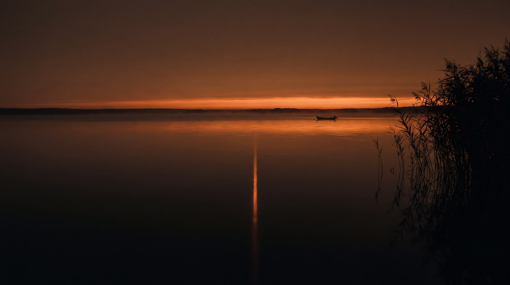
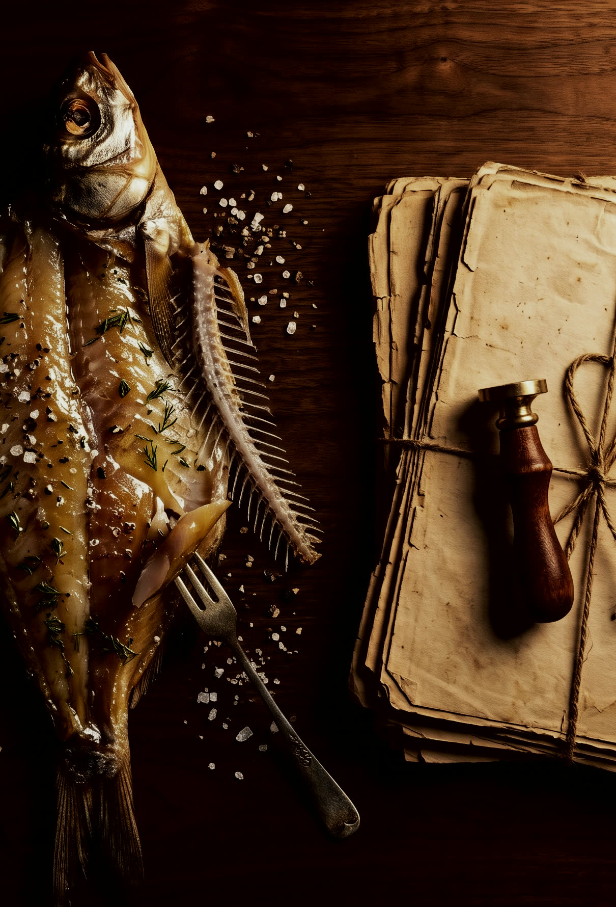
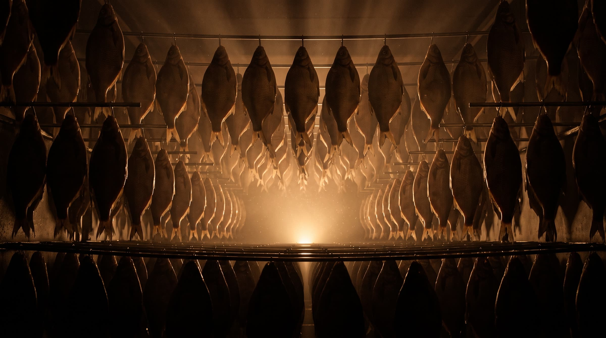
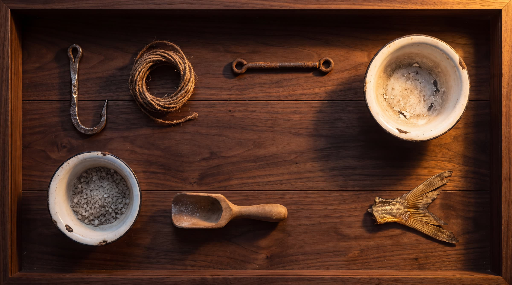

1967
The family started «curing a little fish» — that's what they called it at home. No sign, no workshop, just for themselves.


Every river fish comes from the Tsimlyansk reservoir. One body of water is enough for the whole workshop.
From there: the raw fish is frozen at −20 °C, where the standard only calls for −18. Salted in the cellar, never above +8 °C. Then exactly two days in the drying room.
Four steps of productionThe family started «curing a little fish» — that's what they called it at home. No sign, no workshop, just for themselves.
The trade became an official business: a registered sole proprietorship, paperwork, GOST-standard packaging.
American refrigeration equipment went in. We freeze the raw fish at −20 °C — the standard only calls for −18.
A computer-controlled drying room. We used to salt only in spring — now it's year-round.
On August 25, Channel One filmed a report on our fish.
Sixth decade in business. By 2027 the family trade turns sixty.


a demanding trade full of tricks that fishermen pass down from generation to generationChannel One, 25.08.2008 · a report by Yulia Pogorelova
The tricks are taught down the family line: «Klevtsov's father taught him to cure fish, too».
The same segment warns: buying fish roadside with no paperwork is riskyIntake, salting, the drying room, the finished fish under a lamp. Staged footage — real shots of the workshop are in the Channel One report above.
Order · +7 928 770-21-70